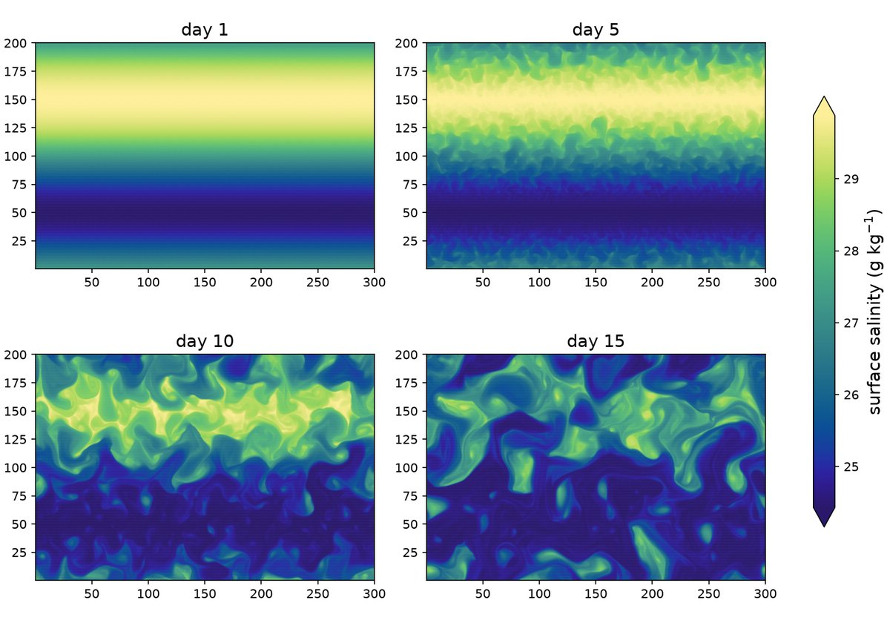
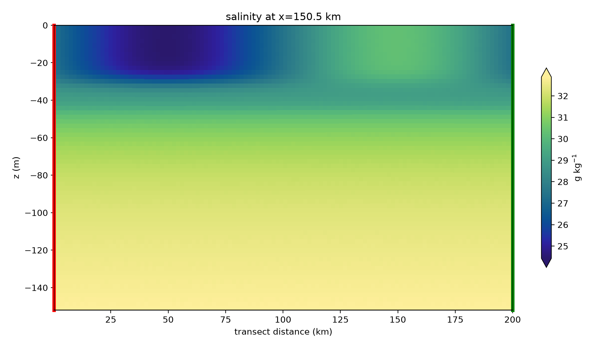
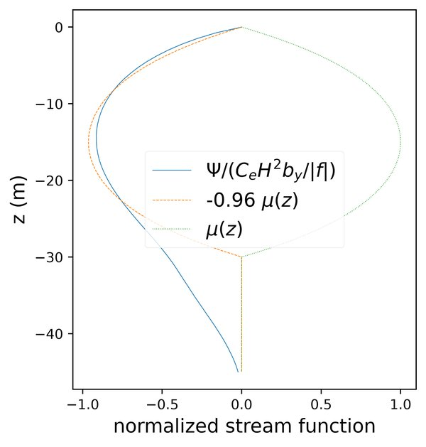
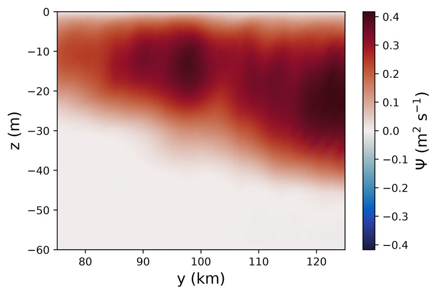
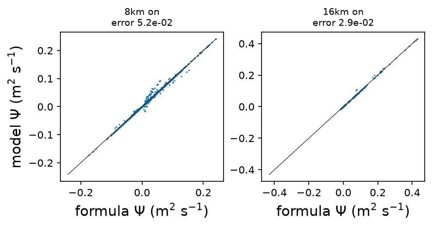
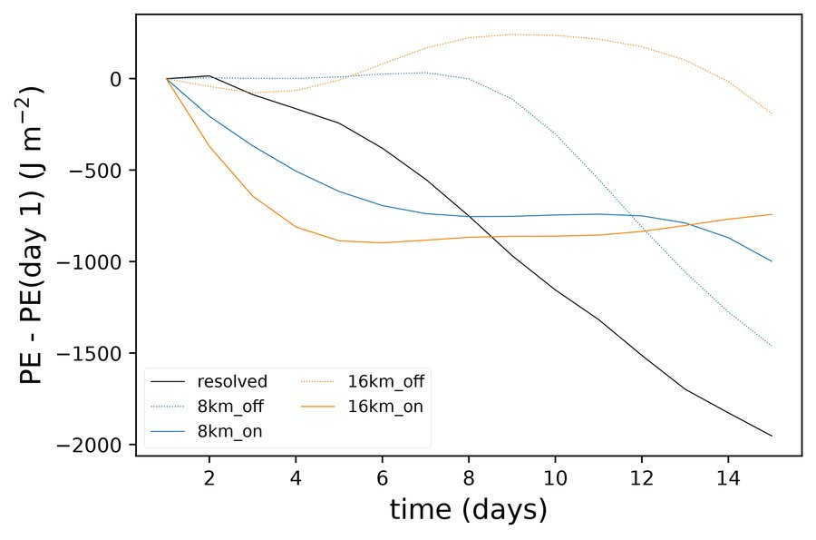
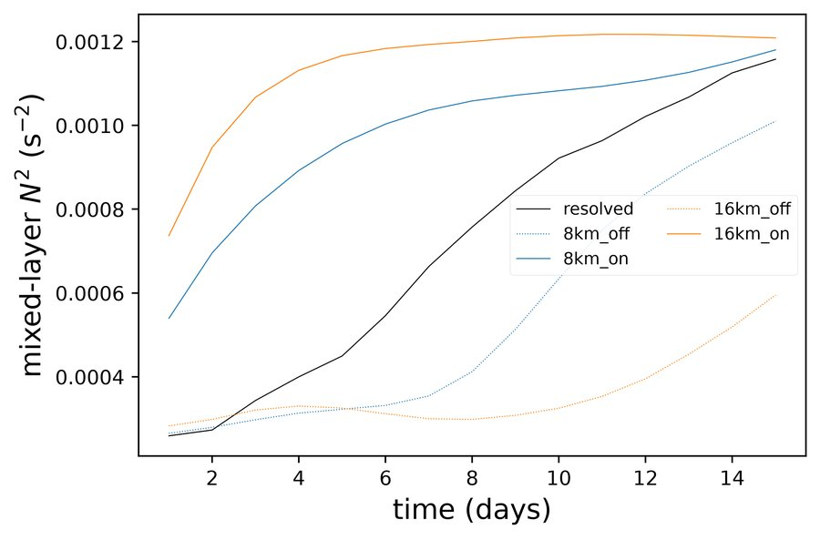
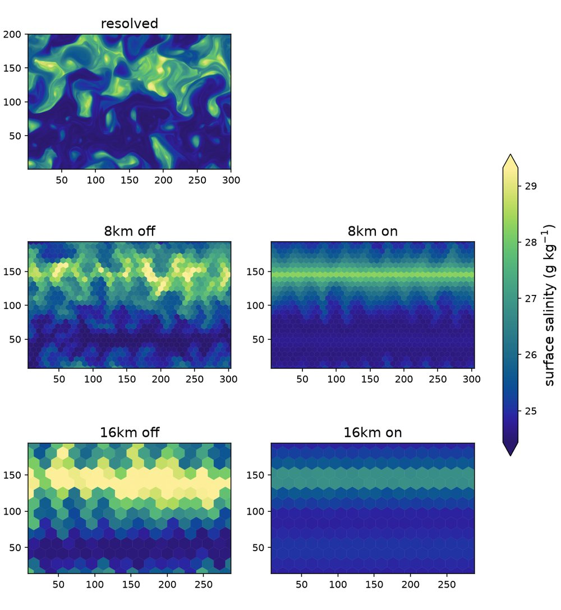
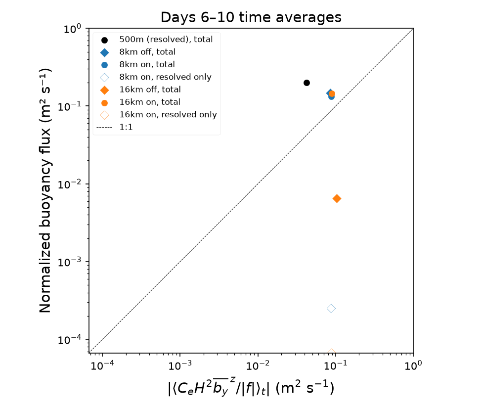

mixed layer eddies
The mixed-layer eddies tasks reproduce the ice-free mixed-layer instability experiment of Shrestha & Manucharyan (2022), which normalizes the eddy overturning by the scaling of Fox-Kemper, Ferrari & Hallberg (2008). A mixed-layer front spins down at rest, with no forcing. An eddy-resolving 500 m run is the reference for coarse runs at 8 and 16 km with the submesoscale eddy parameterization (Fox-Kemper et al. 2011) off and on. The tasks validate that parameterization in Omega and MPAS-Ocean. The design is in the mixed-layer eddies design document.
There are no coarse runs at 2 or 4 km. At 2 km, mixed-layer instability is resolved, and at 4 km it is permitted, so the runs restratify without the parameterization, which is meant for meshes too coarse to permit the eddies.
The tasks are run on demand and are not part of any suite. The resolved run is about the size of an EC30to60 mesh and runs for 15 days.
In the resolved run, mixed-layer eddies emerge on both fronts by day 3, fill the frontal zones by day 7 and have stirred the two fronts together by day 15 (Omega):


supported models
These tasks support both MPAS-Ocean and Omega.
mesh
The mesh is a doubly periodic planar hex mesh, 300 km in x by 200 km in y, at 500 m for the resolved run and at 8 and 16 km for the coarse runs. Rounding to whole rows of cells makes the coarser domains slightly different in size, so all comparisons use quantities per unit length or area.
vertical grid
The flat sea floor is 152 m deep. For Omega, the vertical coordinate is p-star with 64 uniform pseudo-height levels of about 2.4 m. MPAS-Ocean runs z-star from the geometric thicknesses of the converged p-star state.
# Options related to the vertical grid
[vertical_grid]
# the type of vertical grid
grid_type = uniform
# Number of vertical levels (a multiple of 16 for Omega performance)
vert_levels = 64
# Pseudo-depth of the bottom of the pseudo-height grid (m)
bottom_depth = 152.0
# The type of vertical coordinate (e.g. z-level, z-star, p-star)
coord_type = p-star
# Whether to use "partial" or "full", or "None" to not alter the topography
partial_cell_type = None
# The minimum fraction of a layer for partial cells
min_pc_fraction = 0.1
initial conditions
The density follows Shrestha & Manucharyan’s eq. 5:
with \(H_m = 30\) m, \(\Delta h = 5\) m, \(\Delta\rho_y = 3\) kg m⁻³ and \(\Delta\rho_z = 1.5\) kg m⁻³. \(L_y\) is the periodic length of the mesh, so there are two opposing fronts; the one at \(y = L_y/2\) is analyzed. \(\rho_{ITP}\) comes from a salinity profile from Ice-Tethered Profiler 77, held at its 30 m value above 30 m. The equation of state is linear in salinity alone, \(\rho = \rho_0[1 + \beta(S - S_0)]\) with \(\rho_0 = 1027.5\) kg m⁻³, \(\beta = 10^{-3}\) and \(S_0 = 34\), so the front is a salinity front and temperature is a constant -1.4 °C. Uniform salinity noise of ±0.01 from a fixed seed seeds the instability. The velocity is zero and the surface is flat, so the front first undergoes a Rossby adjustment lasting about 2 days. The Coriolis parameter is a constant \(f = 1.4 \times 10^{-4}\) s⁻¹.


forcing
N/A
time step and run duration
The baroclinic time step is 120 s per km of resolution and the barotropic
time step is 4 s per km. Every run lasts 15 days. The resolved run is
split into three segments, each continuing from the restart of the one
before: a spin-up over elapsed days 0–5 with daily restarts, an eddy-output
segment over days 5–10, and an extended segment over days 10–15.
The last two segments write hourly eddy output; all segments also write
daily state output. In calendar-day numbering, the eddy segment starts
at the start of day 6 and ends at the start of day 11.
The overturning diagnostic selects elapsed days 5–7.
The extended segment is optional in both resolved and comparison tasks.
Run polaris serial --steps extended_500m from either task directory
to execute it explicitly. Default analyses use only spinup and eddies
and do not include extended output, even if it exists.
config options
# config options for mixed-layer eddies tasks
[mixed_layer_eddies]
# the size of the doubly periodic domain in km in the x and y directions
lx = 300.0
ly = 200.0
# the geometric depth of the flat sea floor (m)
bottom_depth = 152.0
# the depth of the base of the mixed layer, H_m (m)
mixed_layer_depth = 30.0
# the width of the tanh taper at the base of the mixed layer, Delta h (m)
mixed_layer_taper_width = 5.0
# the amplitude of the sinusoidal density front, Delta rho_y (kg m-3)
front_density_difference = 3.0
# the density offset of the mixed layer, Delta rho_z (kg m-3)
mixed_layer_density_offset = 1.5
# the constant temperature (degC), which does not affect density
temperature = -1.4
# the amplitude of the uniform salinity noise that seeds the instability
salinity_noise_amplitude = 0.01
# the seed for the salinity noise, so the initial state is reproducible
noise_seed = 1
# config options for forward runs of mixed-layer eddies tasks
[mixed_layer_eddies_forward]
# Time integration scheme
time_integrator = split_explicit
# time step per resolution (s/km), since dt is proportional to resolution
dt_per_km = 120.0
# barotropic time step per resolution (s/km)
btr_dt_per_km = 4.0
# Laplacian viscosity per resolution (m2 s-1 per km), scaling with dx
del2_viscosity_per_km = 1.0
# biharmonic viscosity per resolution cubed (m4 s-1 per km3), scaling with
# dx^3
del4_viscosity_per_km3 = 4.4e6
# the duration of each run (days)
run_duration = 15.0
# the duration of the resolved run's spin-up before the eddy diagnosis
# window (days)
spinup_duration = 5.0
# the duration of the overturning window (days)
eddy_window_duration = 2.0
# the interval between snapshots for the eddy diagnostics (hours)
eddy_output_interval = 1.0
# the submesoscale eddy parameterization, when on, with E3SM's coupled
# defaults (namelist_defaults_mpaso.xml), which are also Omega's defaults
[mixed_layer_eddies_mle]
# the time scale that keeps the closure finite near the equator (s)
tau = 172800.0
# the efficiency coefficient
ce = 0.08
# the minimum frontal width (m)
lf_min = 1000.0
# the maximum grid length used in the rescaling (m)
ds_max = 100000.0
Both models get the same parameterization settings. Both coarse grid
lengths are below ds_max, and tau has little effect at this latitude.
The checks and diagnostics are configured in
[mixed_layer_eddies_analysis].
Its flux_average_start_day = 6.0 and flux_average_end_day = 10.0
set the inclusive flux averaging window. The resolved eddies segment
runs from day 5 through day 10, followed by extended from day 10 to 15.
Overturning checks still select days 5–7.
Both coarse MLE settings write frequent output throughout days 0–15.
Vertical mixing is constant background diffusivity and viscosity of 10⁻⁵ m² s⁻¹ plus convective and shear mixing; KPP is off. Bottom drag is implicit and quadratic with a coefficient of 2 × 10⁻³.
cores
The number of cores is determined by goal_cells_per_core and
max_cells_per_core in the ocean section of the config file.
resolved
The ocean/planar/mixed_layer_eddies/resolved task runs the 500 m reference
and diagnoses its eddy overturning in the frontal zone, the central quarter
of the domain in y, over days 5–7. The overturning is computed in salinity
classes, as the residual minus the Eulerian-mean overturning, and is
normalized by the scaling \(C_e H^2 \overline{\partial_y b} / |f|\) with
\(C_e = 0.08\) and \(H = H_m\). The task fails if the normalized amplitude
\(|\Psi^+|\) at mid-mixed-layer is outside psi_plus_min to psi_plus_max.
The resolved analysis also writes combined_buoyancy_flux.png,
combined_buoyancy_flux.csv and combined_buoyancy_flux_average.csv, using
the sampling and scaling described under
Combined buoyancy flux. This figure contains
only the resolved run’s time-averaged point and the 1:1 reference line.
Because the parameterization is off, the parameterized flux is exactly
zero, even if an eddy-velocity field is present in the output.
In Omega, the normalized overturning follows the FFH08 structure function \(\mu(z)\) with \(|\Psi^+| \approx 0.96\). It reaches below 30 m on the dense side of the front, where convection deepens the mixed layer at the start:




coarse
The ocean/planar/mixed_layer_eddies/coarse task runs the 8 and 16 km
meshes with the parameterization off and on. It verifies the
parameterization: in the last output (verify_day) of each run with it
on, the stream function the model adds on each edge in the frontal zone
must match the formula evaluated from the run’s own state, mixed-layer
depth and buoyancy frequency. The normalized RMSE (RMSE divided by the
formula’s RMS) must not exceed verify_tolerance_8km (0.06) at 8 km or
verify_tolerance_16km (0.035) at 16 km. Only
edges whose output mixed-layer depth is the one the eddy velocity was
computed with are compared, and at least verify_min_consistent_fraction
of them must be.
In Omega, the output mixed-layer depth often differs from the one the eddy
velocity used while the mixed layer restratifies, so the last output is
verified. MPAS-Ocean writes the index of its mixed layer’s base
(indMLD), which the formula uses; for Omega, it is found from the
mixed-layer depth. The parameterized stream function matches its formula
to within 5% in Omega and 1.3% in MPAS-Ocean (Omega):


comparison
The ocean/planar/mixed_layer_eddies/comparison task runs all five
simulations, but not the standalone resolved analysis or coarse
verification steps. It reports, in restratification.csv, the potential
energy released from
the end of the Rossby adjustment (adjustment_days) to elapsed day 10
by each coarse run, relative to the resolved run. It plots potential
energy, the mixed-layer buoyancy frequency in the frontal zone and the
surface salinity of every run at that same endpoint. Coarse simulations
still run to day 15, but comparison diagnostics stop at the end of the
resolved eddy segment (day 10 by default). PE ratios and time series are
inspection diagnostics only, with no pass/fail check. They are not direct
targets for tuning \(C_e\): the implemented scheme has explicit resolution
dependence, and coarse and resolved runs restratify on different schedules.
In the earlier 15-day comparison shown below, with the parameterization on, the coarse runs restratify the mixed layer within a few days, faster than the resolved run, and then release little more potential energy. The resolved run keeps releasing it through day 15, so the ratio over 15 days is 0.2–0.5. Over days 2–7 it is about 0.9 in Omega. With the parameterization off, the 8 km run develops its own instability after about day 8, and the 16 km run barely restratifies (Omega):




At day 15, the parameterization has slumped the coarse fronts, while the resolved run’s eddies have stirred them (Omega):


Combined buoyancy flux
The comparison also diagnoses the combined resolved and parameterized
restratifying flux independently in all five simulations: resolved,
8 km on/off and 16 km on/off. It writes
combined_buoyancy_flux.png, snapshot values in
combined_buoyancy_flux.csv, plotted averages in
combined_buoyancy_flux_average.csv. Re-setup and rerun the affected forward
steps to obtain the longer hourly output and required fields; existing
files and completion markers are not refreshed automatically.
For each hourly snapshot, it forms the along-front
covariance \(\langle w'b'\rangle_x\) separately on each native mesh row,
then area-averages over the single band \(75 < y < 125\) km. The
mixed-layer depth \(H\) is the area-weighted band mean of the model’s
density-threshold MLD (DenMixLayerDepth in Omega, dThreshMLD in
MPAS-Ocean). Every forward run writes this field in daily output and,
where enabled, hourly output, regardless of the MLE setting.
Polaris does not diagnose MLD from the buoyancy profile.
Fluxes are evaluated at \(z=-H/2\), where the prescribed shape function is
one, rather than at half the initial mixed-layer depth.
The parameterized contribution is the vertical component of
\(\boldsymbol\Psi\times\nabla b\), reconstructed from the output eddy
velocity and fixed-height buoyancy gradient. It is an equivalent
adiabatic flux, not the numerical tracer flux. Resolved velocities exclude
the parameterized transport. Omega’s vertical pseudo-velocity is converted
with the model’s specific-volume scaling; ALE-total and eddy transport
velocities are not used for the covariance.
Omega writes VerticalPseudoVelocity in every daily and enabled
hourly stream, regardless of the MLE setting.
The parameterized contribution is included only for runs with the
parameterization enabled. It is zero for the resolved run regardless of
whether its output contains an eddy-velocity field; enabled runs must
provide that field.
Each simulation supplies one point, averaged over days 6–10:
\(X=|\langle C_e H^2\overline{b_y}^{\,z}/|f|\rangle_t|\) and
\(Y=|\langle(\overline{w'b'}+\overline{F^*_{b,z}})/\overline{b_y}
\rangle_t|\).
Here the denominator is evaluated at \(-H/2\), and the gradient in \(X\) is
averaged over the mixed layer. The configured \(C_e\) is used for all runs,
including MLE off. Signed instantaneous ratios and scales are averaged
using trapezoidal integration before taking magnitudes; this is not the
ratio of separately averaged flux and gradient. Model timestamps select
the samples. The analysis reports the number of output times within the
window without checking output intervals or requiring exact endpoints.
At least two timestamps are needed; integration is normalized by the
elapsed time between the first and last selected samples, recorded in
the average table.
Nominal hourly output supplies 97 snapshots over 96 intervals, about 12 samples
per inertial period at this latitude. These are not independent
realizations; compare hourly and 3-hourly subsampling to assess temporal
convergence. The sample table contains only the averaging window.
Signed flux components remain in the sample table
(m² s⁻³), with \(H\) (m), gradients (s⁻²), signed scales and ratios
(m² s⁻¹), and the legacy magnitude diagnostics. The average table records
the window, sample count, signed means and plotted coordinates.
The figure shows only these points and a 1:1 line, following Figure 1 of
Fox-Kemper and Ferrari (2008), Part II,
but extending the ordinate to combined transport.
The ordinate is total buoyancy flux normalized by the mean buoyancy
gradient, with units m² s⁻¹.
Resolved is black, 8 km blue and 16 km orange. Filled circles show the
resolved run and MLE on combined flux; filled diamonds show MLE off.
Empty diamonds show the resolved-only contribution within each MLE on
run, using that run’s gradient and scaling. The average table includes
this contribution as resolved_y.
Both axes use logarithmic scales from the smallest resolved_y value to
\(10^0\) m² s⁻¹.
No line is fitted to the combined buoyancy-flux data, and this comparison
has no fit-based pass/fail check.
Undefined mixed-layer depths, weak gradients and insufficient
samples raise errors rather than silently dropping points.

